云安全攻防入门
云资产管理工具
AK/SK 泄露利用工具 WEB 版
存储桶 OSS 遍历漏洞利用工具
云安全是一组程序和技术的集合，旨在解决企业安全所面临的外部和内部威胁。将各种云端工具和服务纳入企业基础架构中时，需要云安全保障业务顺利进行，在云存储中，您可以设置不同的权限级别，以控制谁可以访问存储桶中的数据以及以何种方式进行访问。当这些权限配置出现问题时，就会导致潜在的安全风险
OSS 红云谈安全
云上攻防 - 云服务篇 & 对象存储 & Bucket 桶 & 任意上传
各大厂商云域名前缀，常见的是阿里云和腾讯云分辨厂商看域名前缀
1 | 阿里云: OSS // 开头辨识 LTAI 阿里云的临时密钥可以登录 |
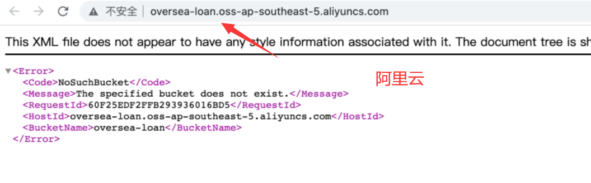
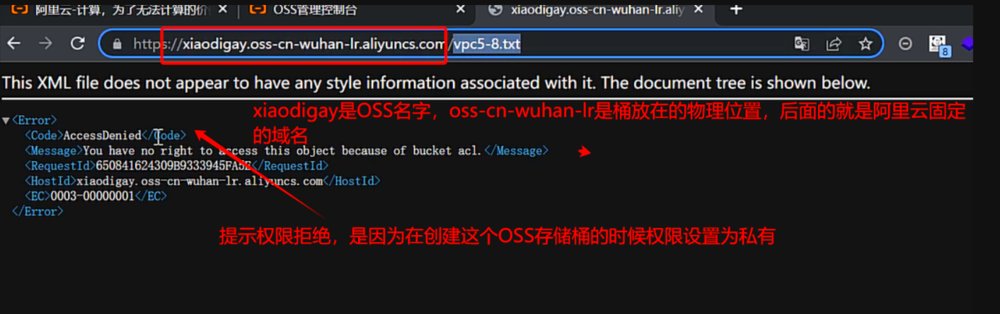
存储桶为空利用脚本跑出数据
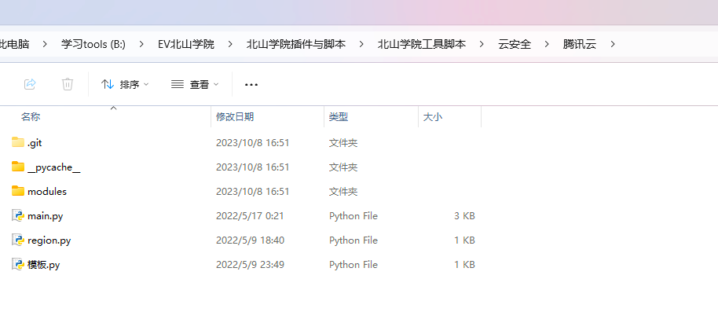
# 云安全攻防姿势
# OSS 存储桶访问配置错误
1 | AccessDenied // 访问被拒绝说明配置是私有是安全的配置 无法操作啥 |
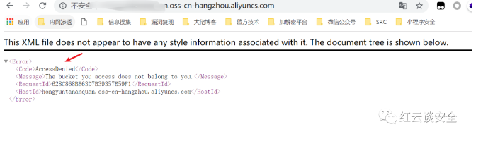
# 公共读信息泄露
权限配置公共读或公共读写也是可以列出目录的但由于没有选择 ** ListObject ** 所以无法显示完整结构目录无法进行第二步拼接 key 访问
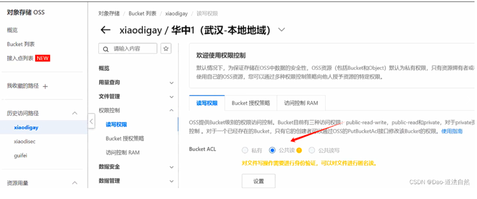
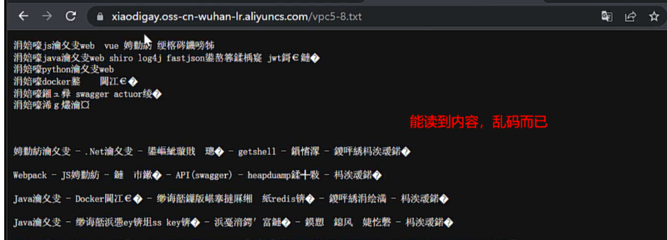
# 公共读写 PUT 文件上传
配置为公共读写代表任何人都可以去上传文件，哪怕不列出目录结构但还是可以利用尝试一下；直接上传会是 403 , 操作是直接抓取域名数据包域名后随便跟随一个文件名字下方写入内容，或者利用 ping 此域名得到 oss 解析的 IP 地址进行上传，上传后了就拼接地址测试是否成功
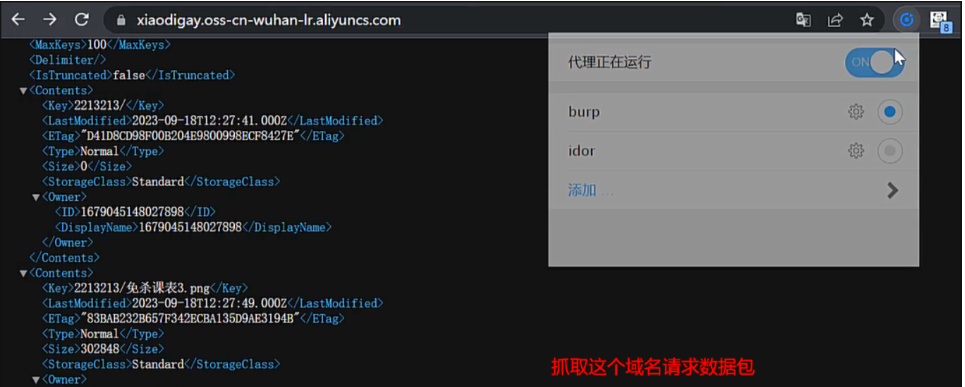
1 | PUT / 1.txt |
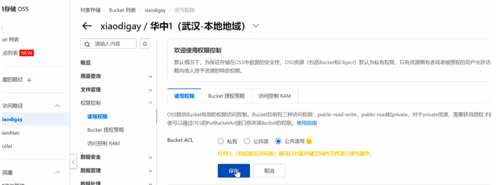
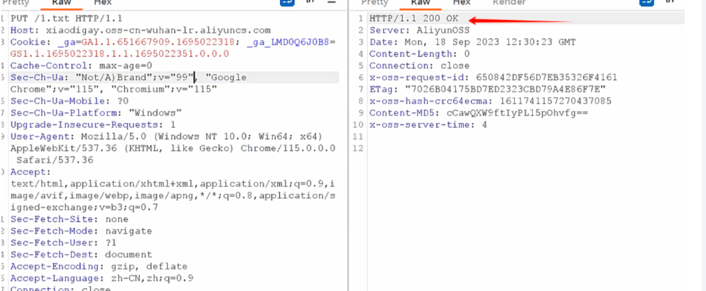
上传成功会在目录下
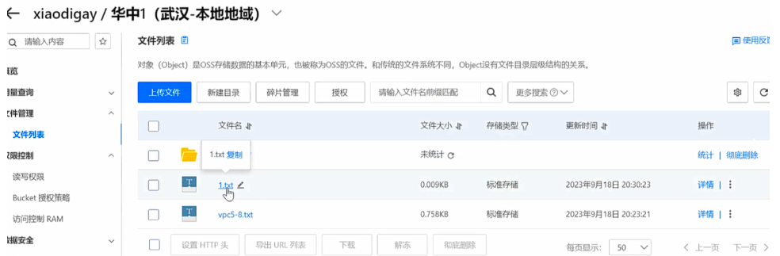
# 公共读 ListObject 信息泄露
配置 公开读和 ** ListObject ** 桶内的 key 信息会全部列出，我们拼接就 key [1] 可以全部访问，所以是运气洞
原理
进行
Bucket桶创建时，默认的权限为私有权限，如果配置是公共读或者公共读写的情况下并且Bucket授权策略设置成ListObject将导致遍历存储桶，
公开读
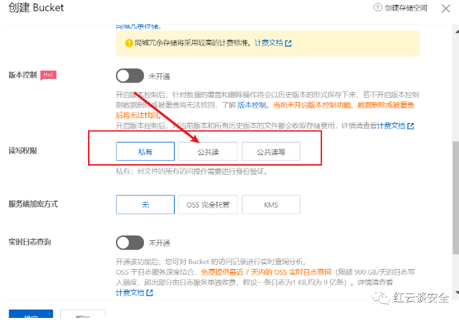
Bucket 授权策略设置 ListObject [2]
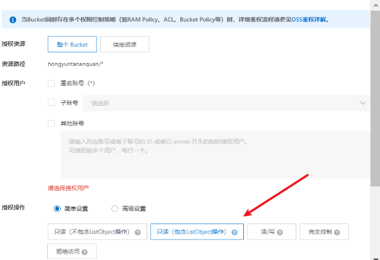
配置错误导致存储桶信息泄露，拼接 Key 中的值导致信息泄露
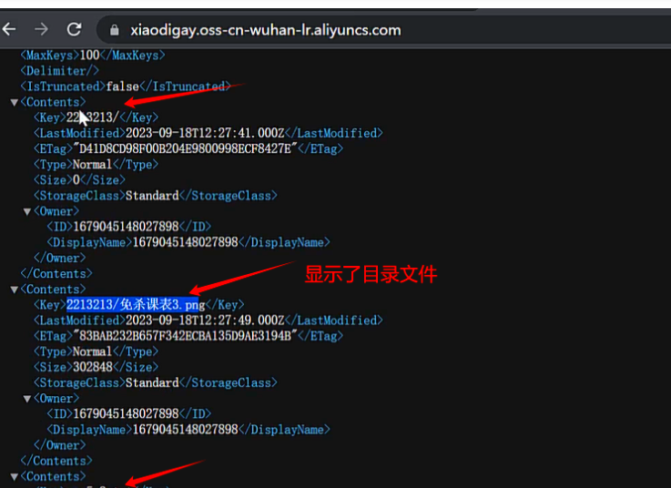
# 判断网站是否绑定云存储
网站绑定了云存储桶上传文件 inde 直接访问会下载不会解析所以上传木马是无用的
1 | https://xiaodigay.oss-cn-wuhan-lr.aliyuncs.com/index.html // 不解析 |
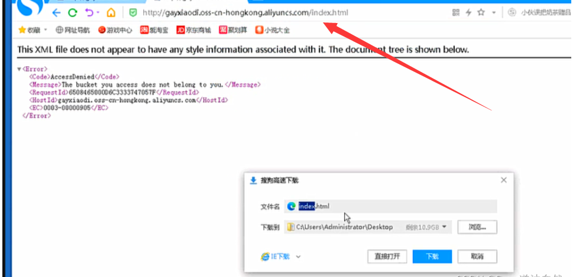
但是存储桶对应解析的域名访问上传的 index 会做解析
第一个是肉眼看域名很长并且出现了 yun 字眼代表是阿里云，看 ping 地址是否回显 IP
# 阿里云桶接管 NoSuchBucket
阿里云 OSS 存储 Bucket 劫持漏洞_nosuchbucket
一次成功的云存储接管实战_阿里云存储桶接管
原理
管理员通过域名绑定了存储桶，这个桶不需要了删除了，但是域名解析 CNAME 没有删除它是 " Canonical Name " 的缩写一种 DNS 记录类型，域名指向到了桶的地址，域名可以访问到这个桶，虽然桶无了但是域名还是访问，就会出现 NoSuchBucket , 出现这种就尝试阿里云劫持存储桶，接管前提是需要在传输管理配置绑定域名
1 | NoSuchBucket // 出现代表可接管 |
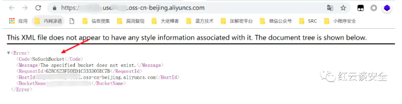
对方用的什么云存储桶你就用什么云存储桶，对方存储桶地域是什么，新建的时候也要选择对应的地域
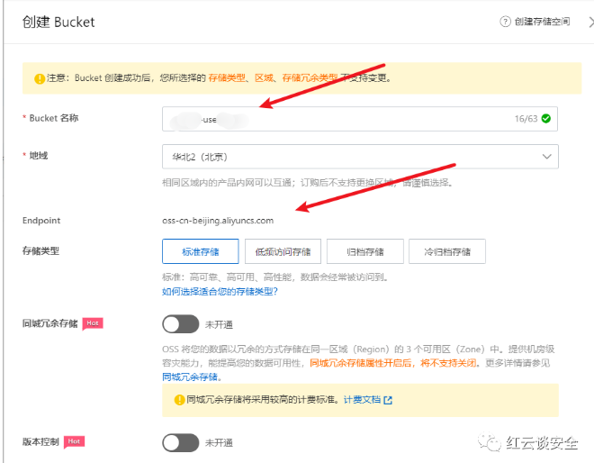
# 预签名链接功能点
oss 预签名链接功能点，请求内出现未签名的链接，响应包是已签名的链接，链接签名前不能访问 预签名后的才可以访问，所有需要想办法将网站的其他链接得到使其预签名，最好的就是根目录了所以需要绕过
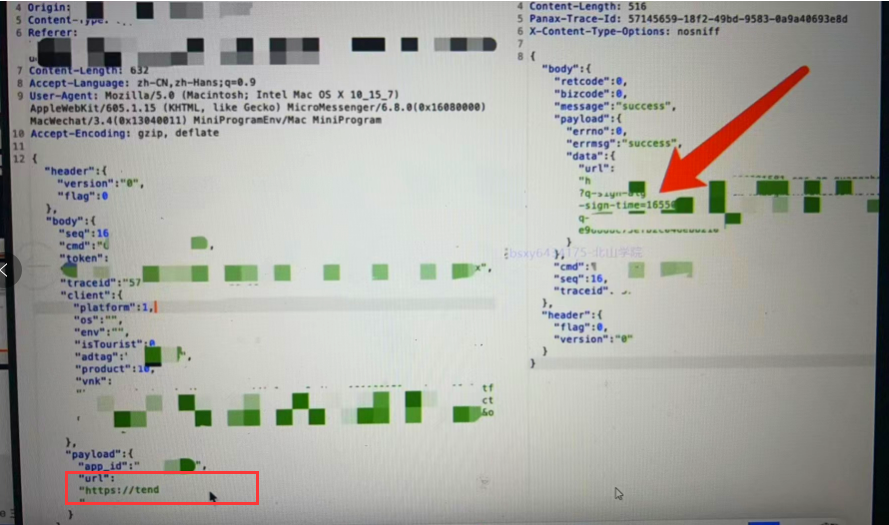
1 | https://tend //使其绕过为根目录再发送 就是对根目录进行签名,那么生成的链接访问了网站所有路径了 |
签名后的根路径访问所有的桶
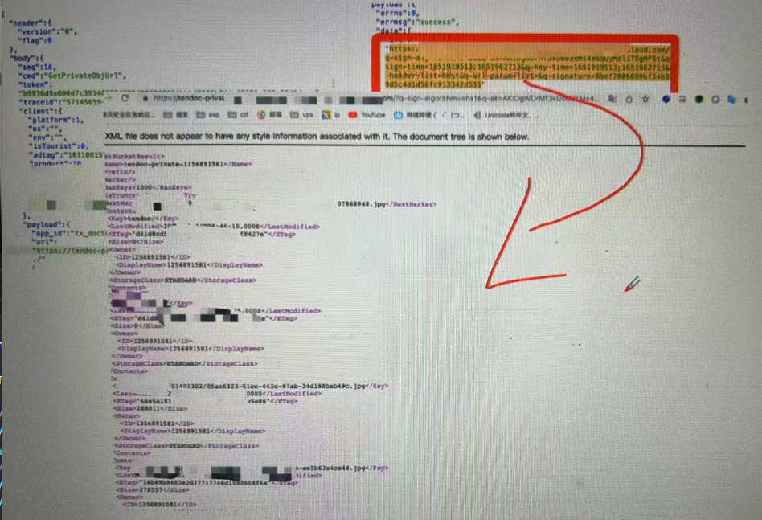
# 云服务器 SSRF 漏洞
云上 SSRF 漏洞访问元数据，如果配置了 RAM 角色意味着可以获取到临时密钥，通过 SSRF 得到临时秘钥并利用密匙创建了子用户并赋予管理员访问权限，最后通过这个子用户接管了目标的控制台。
# 更改参数大小导致拒绝服务
原理
遍历存储桶时由于
max-keys参数可控，我们通过更改它的大小请求服务器，服务器通过大小返回给前端。占用了资源我们更改它的值并且重复发包，响应时间国产造成拒绝服务
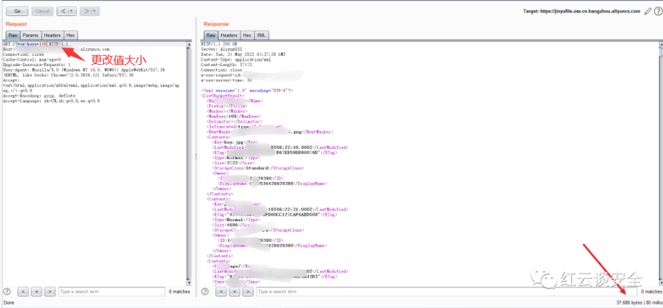
# 腾讯云配置错误列出所有
腾讯云的授权策略中 action 设置为 cos:ListMultipartUploads , 这意味着将列出所有的分段上传任务
List Multipart Uploads用于查询正在进行中的分块上传任务。单次请求操作最多列出 1000 个正在进行中的分块上传
1 | GET /?uploads HTTP/1.1 // 域名后跟随 /?upload 配置错误将列出所有文件 |
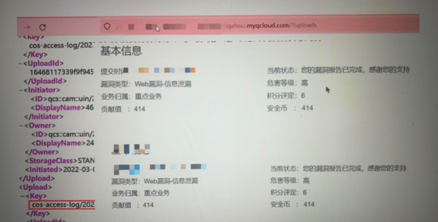
# STS 临时密匙
阿里云 STS 是一种云安全服务，用于为阿里云 RAM 用户（或其他云账号）颁发临时的安全令牌，以便在一定时间内访问阿里云资源，从而实现安全授权和身份验证的目的
使用 STS 临时访问凭证访问 OSS_对象存储 (OSS)
临时密钥的使用
STStoken 覆盖文件
把临时的密钥获取到之后再去找一些登录的脚本，去百度云某某云去搜索它临时脚本的使用获取到之后再去对它的一个文件进行上传覆盖，可以覆盖就是可行
阿里云的临时密钥 sts 直接用 OSS 浏览器登录就行了，如果是挖到这个 OSS 密钥之后如果它提示不是 srcess 错误或者是密钥错误，登录不上去的话就找桶名，把桶名登录上去可能会上去，因为我们找的 OSS 密钥可能不是全部的，可能只是一个桶，所以我们要找桶名把桶名对应上去，桶名就是全局找 网站的上传点下载点 图片加载这或者是去第三方官网，下载它的 Javademo 去调用，那么可以通过 Javademo 给反馈出来
# 阿里云接管控制台无告警
# 云安全密匙 AK SK
云的挖掘都是密钥的泄露，泄露后我们才可以获取到 Access_token （api）
1 | AccessKeyID :(AK)用于标示用户 |
使用 AK/SK 凭证对主机进行绑定
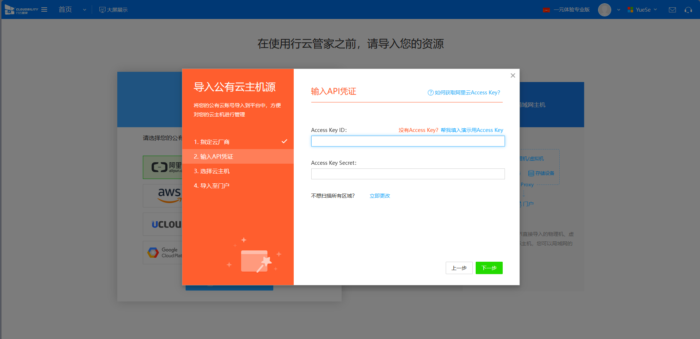
# AK SK 查找
# JS 代码泄露
- 企业登录场景右键源码全局查看是否存在
appsecret appid, 因为所有的这种都是唯一的，所以利用唯一性去github上看看是不是泄露，如果有code字段我们就成功了 - 利用时光机，把登录的站点放到时光机中调整时间，在调整的时间上看 JS 找对应的
Appsecret, 全网只有一个然后拼接使用
# GitHub 仓库泄露
通过语法找到相关的文件进行下载到本地，利用 Vscode 全局查找关键字
1 | 输入某公司某域名 |
找到过后要分辨属于哪家，是阿里云的还是腾讯的然后去官网下载对应的工具填写我们找的数据试试看是否可以登录，但是 GitHub 泄露肯定是个人的，如果是在项目中找到那肯定是高危
# 企业注册上传图片泄露
文件上传后抓包直接泄露 AK SK 由于图片全部上传到了桶中，所以上传功能点泄露风险比较大
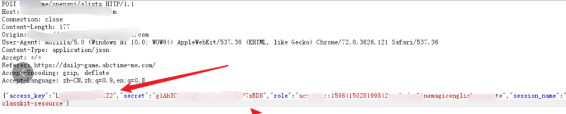
# APP 反编译
反编译为 APK 文件后进行根据全局查找关键字
1 | ak/sk |
批量反编译
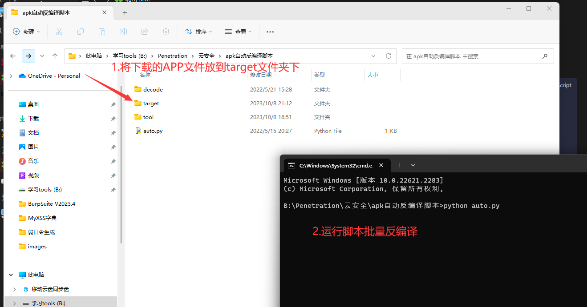
# 小程序反编译
实战遇到上传到存储桶情况，小程序或者 APP , 上传完成并没有产生任何的数据包代表上传需要的 AKSK 前端存储了所以跨域反编译小程序或者 APP 得到 AKSK
反编译教程
获取小程序的源码和 APP 的源码，通过微信开发者工具全局找关键字。尽量使用手工 + 工具，很多时候对参数进行了简写
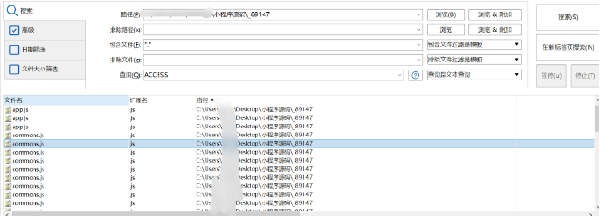
# 泄露防御方式
1 | 云主机AK/SK信息泄露是一种非常严重的安全问题，可能导致云主机被非法访问和控制，引发各种安全问题。以下是一些防御云主机AK/SK信息泄露的措施： |
# 漏洞利用
奇安信攻防社区 - 云主机秘钥泄露及利用
# 阿里 OSS 工具登录
1 | AccessKeyld |
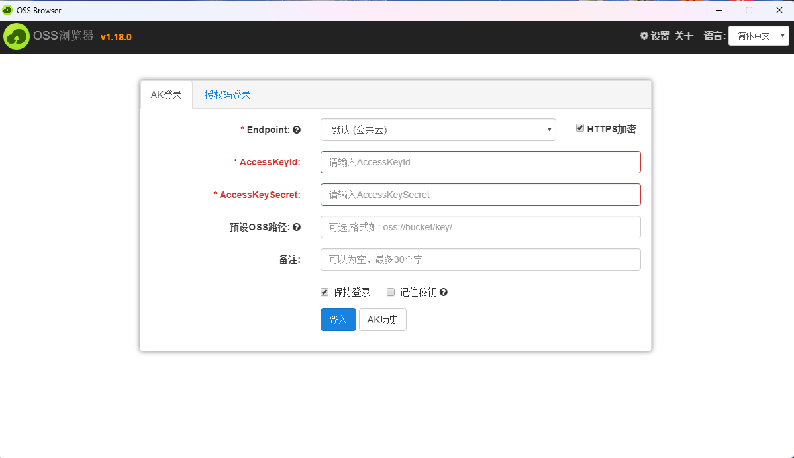
# 腾讯云云主机接管平台
1 | SecretId |
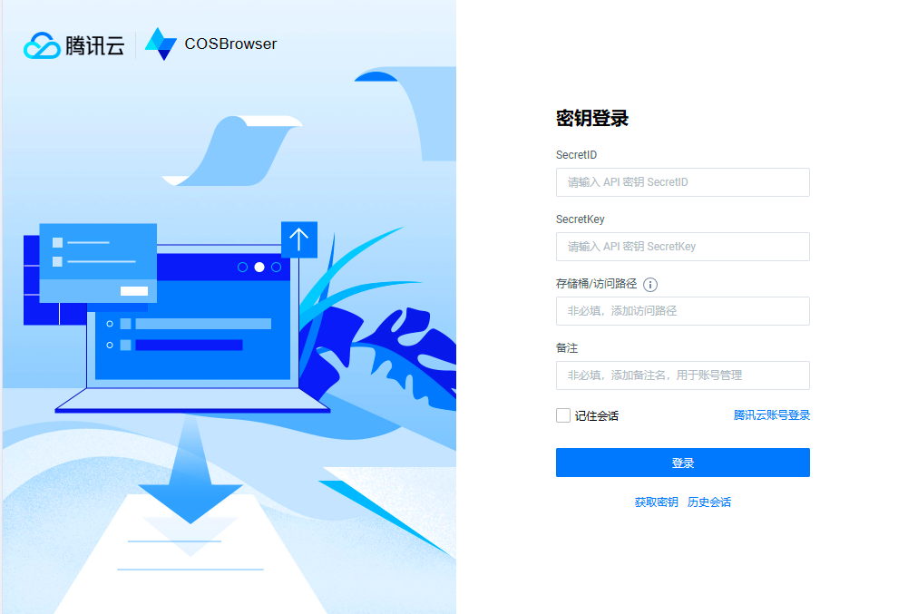
# 行云管家多家厂商
# CF 云环境利用框架
# 小程序 sessionKey + iv 泄露
小程序自动化渗透工具
小程序第一次登录出现的是否允许微信授权当前信息，和个人信息功能点，点击允许后进行抓包，看响应中是否出现 seesionKey iv 加密数据，前后包多看看
泄露 sessionKey iv 任意用户登录
根据微信开发者文档发现.
sesionkey是encryptedDate的加密密钥，不应该返回给用户，如果返回中出现了sesionkey+iv成功解密了加密的数据，那么在登录阶段就可以任意替换手机号进行加密，实现任意用户登录；
这个不属于云安全，利用方式通过百度网盘提供的脚本 替换对应的位置 然后生成新的加密数据号码实现任意用户登录。存在二重认证的情况是登录进去了 拿不到数据只是一个置位效果，没有二重认证的话就是高危
1 | encryptedDate: 用户加密数据手机号这些 |
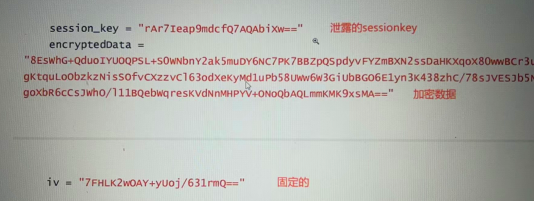
** PHP ** 解密脚本
1 | <?php |
# Oauth2.0 原理
OA2.0 挖掘姿势
博客园 OA2.0 挖掘姿势
利用：账户登录进后绑定微信 code
baidu.com 存在微信第三方绑定或者登录，微信给他一个 secretkey 和 appid 可以调用微信的 api , 所以网站会生成一个二维码，用户扫了之后微信再返回给用户一个独一无二的 code , 谁用了这个 code 就会绑定到谁的微信上去。我的 code 让别人扫了，那么我的微信就绑定了别人的网站信息，造成账号接管
1 | 核心: |
1 | 利用: |